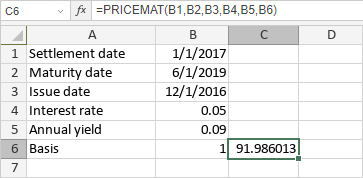

PRICEMAT funkcija
PRICEMAT funkcija je jedna od finansijskih funkcija. Koristi se za izračunavanje cene po nominalnoj vrednosti od $100 za hartiju od vrednosti koja isplaćuje kamatu po dospeću.
Sintaksa
PRICEMAT(settlement, maturity, issue, rate, yld, [basis])
PRICEMAT funkcija ima sledeće argumente:
| Argument | Opis |
|---|---|
| settlement | Datum kupovine hartije od vrednosti. |
| maturity | Datum dospeća hartije od vrednosti. |
| issue | Datum izdavanja hartije od vrednosti. |
| rate | Kamatna stopa hartije od vrednosti na datum izdavanja. |
| yld | Godišnji prinos hartije od vrednosti. |
| basis | Osnova za obračun dana koja se koristi, numerička vrednost veća ili jednaka 0, ali manja ili jednaka 4. Ovo je opcioni argument. Moguće vrednosti su navedene u tabeli ispod. |
Argument basis može imati jednu od sledećih vrednosti:
| Numerička vrednost | Osnova obračuna |
|---|---|
| 0 | US (NASD) 30/360 |
| 1 | Stvarno/stvarno |
| 2 | Stvarno/360 |
| 3 | Stvarno/365 |
| 4 | Evropski 30/360 |
Napomene
Datumi moraju biti uneti korišćenjem DATE funkcije.
Kako primeniti PRICEMAT funkciju.
Primeri
Slika ispod prikazuje rezultat koji vraća PRICEMAT funkcija.
